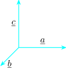
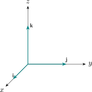
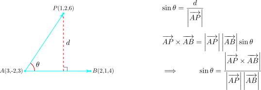
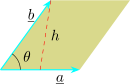
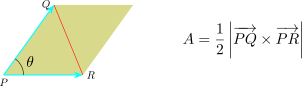

4.7 The Vector Product of Two Vectors
Let \(\underline {a}\) and \(\underline {b}\) be two non parallel vectors in the same plane and let \(\underline {c}\) be a third vector not in the plane of \(\underline {a}\) and \(\underline {b}\). Then , the three vectors \(\underline {a}, \underline {b}\) and \(\underline {c}\) are said to form a right handed set. If they are mutually perpendicular.

Note that by definition, the unit vectors \(\textbf {i}, \textbf {j}\) and \(\textbf {k}\) form a right handed set.

The vector product of two vectors \(\underline {a}\) and \(\underline {b}\) is defined as \(\underline {a} \times \underline {b} = \left |a\right |\left |b\right |\sin \theta \hspace {0.1cm} \hat {\textbf {n}}\), where \(\theta \) is the angle between \(\underline {a}\) and \(\underline {b}\) and \(\hat {\textbf {n}}\)
is a unit vector in the direction of \(\underline {a} \times \underline {b}\). The vectors \(\underline {a}\), \(\underline {b}\) and \(\underline {a} \times \underline {b}\) form a right handed set.
Note.
- 1.
- The vector (cross) product \(\underline {a} \times \underline {b}\) is perpendicular to both \(\underline {a}\) and \(\underline {b}\).
- 2.
- \(\underline {b}\times \underline {a} = -(\underline {a} \times \underline {b})\).
Let \(\underline {a}\) and \(\underline {b}\) be nonzero vectors. Then \(\underline {a}\) and \(\underline {b}\) are parallel if and only if \(\underline {a} \times \underline {b} =0\).
Using the definition of vector product we have following \[ \textbf {i}\times \textbf {i}= 0 \hspace {0.2cm}, \hspace {0.2cm} \textbf {i}\times \textbf {j} = \textbf {k} \hspace {0.2cm} ,\hspace {0.2cm} \textbf {i} \times \textbf {k} = - \textbf {j}\hspace {0.2cm} ,\] \[\textbf {j} \times \textbf {i} = -\textbf {k}\hspace {0.2cm} , \hspace {0.2cm} \textbf {j} \times \textbf {j} = 0 \hspace {0.2cm} , \hspace {0.2cm} \textbf {j} \times \textbf {k} = \textbf {i}\hspace {0.2cm}, \] \[\textbf {k} \times \textbf {i} = \textbf {j}\hspace {0.2cm}, \hspace {0.2cm} \textbf {k} \times \textbf {j} = -\textbf {i} \hspace {0.2cm} , \hspace {0.2cm} \textbf {k} \times \textbf {k} = 0\]
The vector product of the unit vectors \(\textbf {i}, \textbf {j}\) and \(\textbf {k}\) form the following array.
The array is used to place signs in the cross product of the unit vectors \(\textbf {i}\), \(\textbf {j}\) and \(\textbf {k}\). If in performing a cross product of two of the unit vectors, we proceed counterclockwise, then the resultant will be a third vector with a plus sign. If the direction is clockwise then the resultant will have a minus sign.
For any scalar \(\alpha \) and any pair of vectors \(\underline {a}\) and \(\underline {b}\) \[\alpha (\underline {a} \times \underline {b}) = (\alpha \underline {a}) \times \underline {b} =\underline {a} \times (\alpha \underline {b})\]
Note that taking \(\alpha = -1\) gives \[-\big (\underline {a}\times \underline {b}\big ) = \big (-\underline {a}\big )\times \underline {b}=\underline {a}\times \big (-\underline {b}\big ).\]
Proof.
If \(\alpha = 0\), all the products are zero. If \(\alpha > 0\), \( \theta \) is an angle between \(\underline {a}\) and \(\underline {b}\) and \(\widehat {\textbf {n}}\) is a vector in the direction of \(\underline {a} \times \underline {b}\), then \begin {align*} \alpha (\underline {a} \times \underline {b}) & = \alpha \Big ( \left |a\right |\left |b\right | \sin \theta \hspace {0.1cm}\widehat {\textbf {n}}\Big )\\ & =\Big (\alpha \left |a\right |\left |b\right |\Big ) \sin \theta \hspace {0.1cm}\widehat {\textbf {n}}\\ & = \left |\alpha a\right |\left |b\right | \sin \theta \hspace {0.1cm}\widehat {\textbf {n}}=(\alpha \underline {a} ) \times \underline {b}\\ & = \left |a\right |\left |\alpha b\right | \sin \theta \hspace {0.1cm}\widehat {\textbf {n}}= \underline {a}\times (\alpha \underline {b}) \end {align*}
If \(\alpha < 0\), then \(\alpha (\underline {a} \times \underline {b})\) is a vector that is parallel to \(\underline {a} \times \underline {b}\) but in the opposite direction. On the hand, \(\alpha \underline {a}\) is parallel to \(\underline {a}\) but also points in the opposite direction. Thus \((\alpha \underline {a}) \times \underline {b}\) points in the opposite direction \((\underline {a} \times \underline {b})\).
In addition the length or the vectors \(\alpha (\underline {a} \times \underline {b})\) and \((\alpha \underline {a}) \times \underline {b}\) are equal. Therefore the vectors \(\alpha (\underline {a} \times \underline {b})\) and \((\alpha \underline {a})\times \underline {b}\) are equal. A similar argument shows that \(\alpha (\underline {a}\times \underline {b}) = \underline {a} \times (\alpha \underline {b})\). □
The Associative Law
If \(\alpha \) and \(\beta \) are any two scalars, \(\underline {a}\) and \(\underline {b}\) vectors , then \((\alpha \underline {a}) \times (\beta \underline {b}) = (\alpha \beta ) \underline {a} \times \underline {b}\)
The Distributive Law
For any three vectors \(\underline {a}, \underline {b}\) and \(\underline {c}\) , then \(\underline {a}\times (\underline {b} + \underline {c}) = (\underline {a}\times \underline {b}) + (\underline {a}\times \underline {c}\)
The Companion Law
For any three vectors \(\underline {a}, \underline {b}\) and \(\underline {c}\) , then \((\underline {b} + \underline {c})\times \underline {a} = (\underline {b} \times \underline {a}) + (\underline {c} \times \underline {a})\)
If \(\underline {a} = a_1 \textbf {i} + a_2 \textbf {j} + a_3\textbf {k}\) and \(\underline {b} = b_1 \textbf {i} + b_2 \textbf {j} + b_3\textbf {k}\) \[\underline {a} \times \underline {b} = \begin {vmatrix} \textbf {i} & \textbf {j} & \textbf {k}\\ a_1 & a_2 & a_3\\ b_1 & b_2 & b_3\\ \end {vmatrix}\]
Proof. Expand the product using the distributive law, taking the scalar coefficients outside by the scalar law stated above. This gives nine terms, one for each pair of basis vectors: \begin {align*} \underline {a}\times \underline {b} &= \big (a_1\textbf {i} + a_2\textbf {j} + a_3\textbf {k}\big )\times \big (b_1\textbf {i} + b_2\textbf {j} + b_3\textbf {k}\big )\\ &= a_1b_1(\textbf {i}\times \textbf {i}) + a_1b_2(\textbf {i}\times \textbf {j}) + a_1b_3(\textbf {i}\times \textbf {k})\\ &\quad + a_2b_1(\textbf {j}\times \textbf {i}) + a_2b_2(\textbf {j}\times \textbf {j}) + a_2b_3(\textbf {j}\times \textbf {k})\\ &\quad + a_3b_1(\textbf {k}\times \textbf {i}) + a_3b_2(\textbf {k}\times \textbf {j}) + a_3b_3(\textbf {k}\times \textbf {k}) \end {align*}
Now evaluate the nine basis products from the definition of the cross product. For the three like pairs the angle between the vectors is \(0\), so \(\sin \theta = 0\) and \[\textbf {i}\times \textbf {i} = \textbf {j}\times \textbf {j} = \textbf {k}\times \textbf {k} = \underline {0}.\] For the unlike pairs the vectors are perpendicular unit vectors, so the magnitude is \(1\cdot 1\cdot \sin 90^\circ = 1\), and the right-hand rule fixes the direction: \[\textbf {i}\times \textbf {j} = \textbf {k},\qquad \textbf {j}\times \textbf {k} = \textbf {i},\qquad \textbf {k}\times \textbf {i} = \textbf {j},\] \[\textbf {j}\times \textbf {i} = -\textbf {k},\qquad \textbf {k}\times \textbf {j} = -\textbf {i},\qquad \textbf {i}\times \textbf {k} = -\textbf {j}.\]
Substituting these, the three like terms vanish and the remaining six become \begin {align*} \underline {a}\times \underline {b} &= a_1b_2\textbf {k} - a_1b_3\textbf {j} - a_2b_1\textbf {k} + a_2b_3\textbf {i} + a_3b_1\textbf {j} - a_3b_2\textbf {i}\\ &= \big (a_2b_3 - a_3b_2\big )\textbf {i} - \big (a_1b_3 - a_3b_1\big )\textbf {j} + \big (a_1b_2 - a_2b_1\big )\textbf {k} \end {align*}
Finally, expanding the determinant in the statement along its first row gives \[\begin {vmatrix} \textbf {i} & \textbf {j} & \textbf {k}\\ a_1 & a_2 & a_3\\ b_1 & b_2 & b_3\\ \end {vmatrix} = \textbf {i}\begin {vmatrix} a_2 & a_3\\ b_2 & b_3\end {vmatrix} - \textbf {j}\begin {vmatrix} a_1 & a_3\\ b_1 & b_3\end {vmatrix} + \textbf {k}\begin {vmatrix} a_1 & a_2\\ b_1 & b_2\end {vmatrix}\] \[= \big (a_2b_3 - a_3b_2\big )\textbf {i} - \big (a_1b_3 - a_3b_1\big )\textbf {j} + \big (a_1b_2 - a_2b_1\big )\textbf {k},\] which is the same expression. Hence the two agree. □
- 1.
- Given that \(\underline {a} = 2 \textbf {i} - \textbf {j} + \textbf {k}\hspace {0.2cm},\hspace {0.2cm} \underline {b} = \textbf {i} + 2\textbf {j} - 3\textbf {k},\hspace {0.2cm}\) evaluate \(\underline {a} \times \underline {b}\) and hence find \(\sin \theta \).
- 2.
- Find symmetric equations of the line which passes through \((-1,1,2)\) whose direction vector is orthogonal to the direction vectors of the lines \(\displaystyle {\frac {x - 2}{1} = \frac {y + 1}{2} = \frac {z - 1}{3}}\) and \(\displaystyle {\frac {x - 1}{5} = \frac {y - 2}{2} = \frac {z + 1}{-3}}\)
- 3.
- Find the distance of the point \(P(1,2,6)\) from the line which passes through \(A(3,-2,3)\) and \(B(2,1,4)\).
Solution.
Part 1
\begin {align*} \underline {a} \times \underline {b} & = \begin {vmatrix} \textbf {i} & \textbf {j} & \textbf {k}\\ 2 & -1 & 1\\ 1 & 2 & -3\\ \end {vmatrix} = \begin {vmatrix} -1 & 1\\ 2 & -3\\ \end {vmatrix}\textbf {i} - \begin {vmatrix} 2 & 1\\ 1 & -3\\ \end {vmatrix}\textbf {j} + \begin {vmatrix} 2 & -1\\ 1 & 2\\ \end {vmatrix}\textbf {k}\\ & = \textbf {i} + 7\textbf {j} + 5\textbf {k} \end {align*}
\(\displaystyle { \underline {a} \times \underline {b} = \left |\underline {a}\right |\left |\underline {b}\right | \sin \theta \hspace {0.1cm} \left |\widehat {\textbf {n}}\right |}\)
\[\left |\underline {a}\times \underline {b}\right | = \left ||\underline {a}||\underline {b}|\sin \theta |\widehat {\textbf {n}}|\right |\hspace {0.1cm}, \hspace {0.2cm}\text {but}\hspace {0.2cm} |\widehat {\textbf {n}}| = 1\]
So that \(\left |\underline {a}\times \underline {b}\right |= \left |\underline {a}\right |\left |b\right |\sin \theta \)
\[\sin \theta = \frac {\left |\underline {a} \times \underline {b}\right | }{\left |\underline {a}\right |\left |\underline {b}\right | }\]
\[\left |\underline {a}\times \underline {b}\right |=\sqrt {75} = 5\sqrt {3}\hspace {0.5cm},\hspace {0.5cm} \left |\underline {a}\right |=\sqrt {6}\hspace {0.5cm},\hspace {0.5cm} \left |\underline {b}\right |=\sqrt {14}\]
\[\therefore \hspace {1cm} \sin \theta = \frac {5\sqrt {3}}{\sqrt {6}\sqrt {14}}= \frac {5}{2\sqrt {7}}\]
Part 2
Note that the direction vectors of the given lines are \(\underline {a} = \textbf {i} + 2\textbf {j} + 3\textbf {k}\) and \(\underline {b} = 5\textbf {i} + 2\textbf {j} - 3\textbf {k}\). The vector orthogonal to \(\underline {a}\) and \(\underline {b}\)
\[\underline {a} \times \underline {b} = \begin {vmatrix} \textbf {i} & \textbf {j} & \textbf {k}\\ 1 & 2 & 3\\ 5 & 2 & -3\ \end {vmatrix}= -12 \textbf {i} + 18\textbf {j} - 8\textbf {k}\] Thus, the direction vector of the line is \( -12 \textbf {i} + 18\textbf {j} - 8\textbf {k}\). So symmetric equations are \[\frac {x + 1}{-12} = \frac {y - 1}{18} = \frac {z - 2}{-8}\]
Part 3

\begin {align*} d & = \left |\overrightarrow {AP}\right |\sin \theta = \left |\overrightarrow {AP}\right |\cdot \frac {\left |\overrightarrow {AP}\times \overrightarrow {AB}\right | }{\left |\overrightarrow {AP}\right |\left |\overrightarrow {AB}\right | }\\ d & = \frac {\left |\overrightarrow {AP}\times \overrightarrow {AB}\right | }{\left |\overrightarrow {AB}\right | } = \frac {\sqrt {30}}{\sqrt {11}}\\ \end {align*}
A geometrical interpretation of the length of the cross product can be seen by looking at the figure below.

\[\sin \theta = \frac {h}{ \left |b\right | }\implies h = \left |b\right | \sin \theta \]
\[A = \left |\underline {b}\right |\sin \theta \left |\underline {a}\right |=\left |\underline {a} \times \underline {b}\right |\]
If \(\underline {a}\) and \(\underline {b}\) are represented by directed line segments with the same initial point, then they determine a parallelogram with base \(\left |\overline {a}\right |\), altitude \(\left |\underline {b}\right |\sin \theta \) and area is \[A = \left |\underline {a}\right |\left |\underline {b}\right |\sin \theta = \left |\underline {a} \times \underline {b}\right |\]
Find the area of the triangle with vertices \(P(1,4,6) , Q(-2, 5, -1)\) and \(R(1,-1,1)\).
Solution.
\(\overrightarrow {PQ} = -3\textbf {i} + \textbf {j} - 7\textbf {k}\hspace {0.2cm}, \hspace {0.2cm} \overrightarrow {PR} = -5\textbf {j} - 5\textbf {k}\)

\[\overrightarrow {PQ}\times \overrightarrow {PR} = \begin {vmatrix} \textbf {i} & \textbf {j} & \textbf {k}\\ -3 & 1 & -7\\ 0 & -5 & -5\\ \end {vmatrix} = -40\textbf {i} -15\textbf {j} + 15\textbf {k}\]
Area of triangle \(PQR= \dfrac {1}{2}\left |-40\textbf {i} -15\textbf {j} + 15\textbf {k}\right | = \dfrac {5}{2}\sqrt {82}\)
Questions on this section
Stuck on something here? Ask below and it stays attached to this topic.